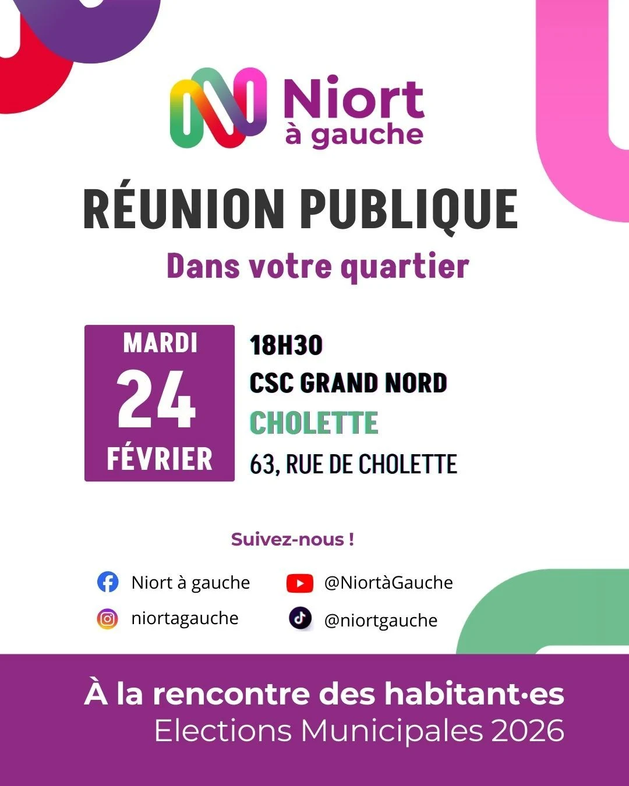

Annonce archivée
Niort à gauche. Réunion publique à Cholette le 24 février
Date indiquée par Facebook · 23 février 2026
Repères éditoriaux
La liste Niort à gauche donnait rendez-vous le mardi 24 février 2026 à 18 h 30 au centre socioculturel Grand Nord, 63 rue de Cholette, à Niort. La rencontre s’inscrivait dans la série « À la rencontre des habitant·es » pour les municipales.

Sources
Archive rouge · document diffusé sur Facebook · AR-0002-FB-00861
À lire aussi · Face au budget d’austérité, le PCF propose un pacte d’avenir